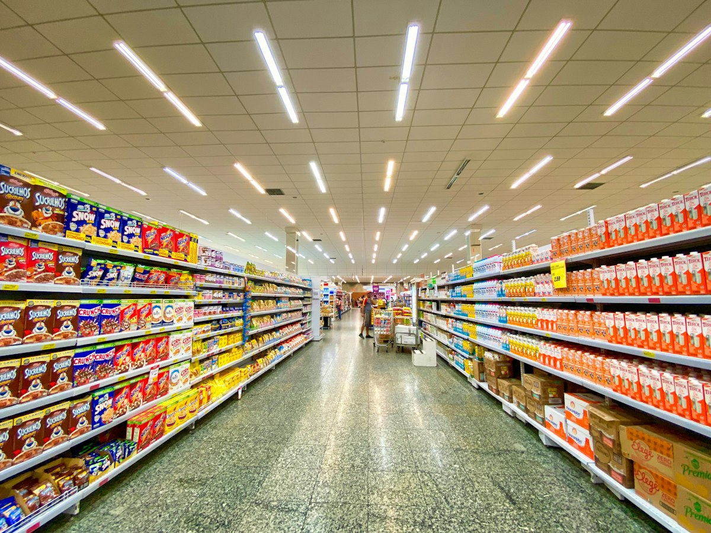
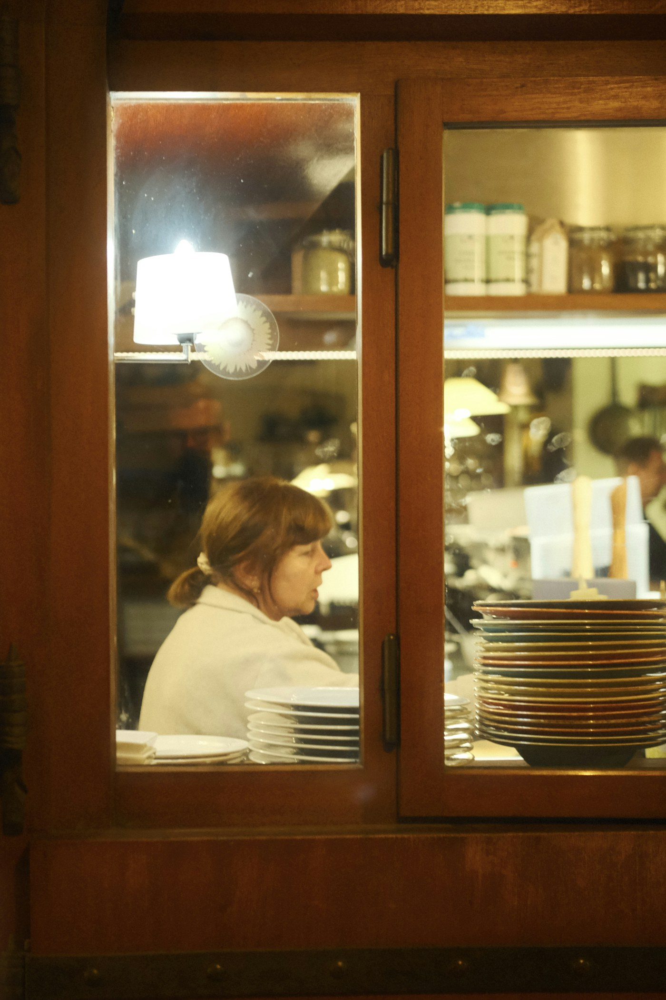
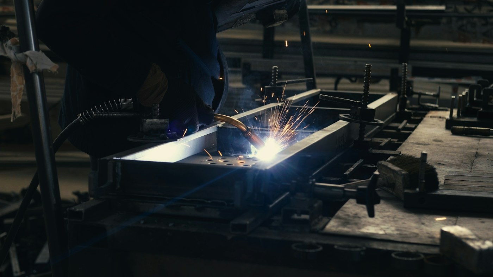
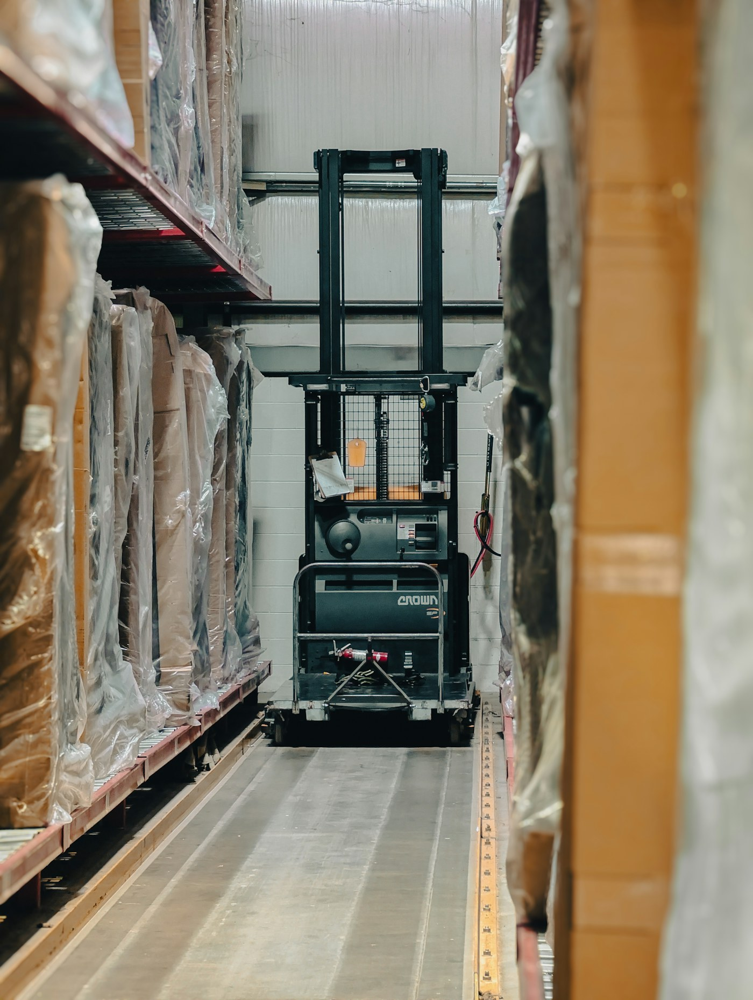

ابدأ من طريقة عمل منشأتك.
استكشف كيف يمكن لنظام واحد أن يربط البيع والمخزون والتشغيل والمالية، مع تجربة تلائم فريقك ونوع عملك.
من أول حركة مخزون إلى البيع والتشغيل والتحصيل، يجمع Foundix أعمال منشأتك في مكان واحد. نواة مشتركة، وتجربة تتشكل حول طريقة عمل متجرك أو مطعمك أو ورشتك.
بيانات وتشغيل وصلاحيات مترابطة داخل نظام واحد.
كل قطاع له مفرداته وإيقاعه. لذلك ترتب المنصة العمل حول ما يحدث داخل المنشأة، وتترك لكل نشاط مساره الواضح.

تابع البضاعة من الاستلام إلى الرف والكاشير، مع متابعة الرصيد والمرتجعات والورديات.

اربط الطلب بالمكونات والتجهيز والتسليم، وسجّل الاستهلاك والهالك ضمن سير العمل.

تابع الخامات ومراحل التشغيل، من التجميع أو الدهان إلى الفحص والتسليم، مع توثيق الفاقد.

نظّم قوائم الأسعار والطلبات والمخزون والتحصيل، واربط حركة البيع بمواقع العمل.
قيمة النظام تظهر حين ينعكس الطلب على المخزون والتشغيل والتحصيل، وتصل المعلومة الصحيحة إلى الشخص المسؤول.
سلع جاهزة، مواد خام، مكونات، خدمات أو نواتج تشغيل؛ مع الوحدات والأسعار التي تناسب عملك.
الكتالوج · وحدات القياس · قوائم الأسعارسجّل التوريد والصرف والتحويل والجرد؛ وافهم أثر كل حركة على المتاح والفعلي والتكلفة.
المشتريات · المخزون · الفروعاستخدم وصفة بسيطة للتجهيز، أو مسار تشغيل متعدد المراحل للتصنيع والمعالجة.
وصفات · تعبئة · أوامر تشغيلاربط الطلب بالفاتورة والدفع والوردية، ثم راجع الأثر المالي والتشغيلي من تقارير المنشأة.
نقطة البيع · العملاء · المالية والتقاريرلا يحتاج المطعم إلى شاشة ورشة، ولا تحتاج الورشة إلى مفردات المطعم. يظل سجل البيانات والمخزون والصلاحيات موحدًا، بينما تظهر العمليات والحقول التي يحتاجها كل فريق.
الأصناف والعملاء والفروع والمخازن والمستندات مترابطة، فتقل إعادة الإدخال ويصبح تتبع الأثر أوضح.
بيع مباشر أو تجهيز وصفة أو معالجة منتج أو تصنيع على مراحل؛ كل مسار يستخدم المصطلحات والإجراءات المناسبة.
يعمل كل شخص ضمن مهامه وموقعه، مع سجل يوضح من نفّذ العملية وما الذي تغيّر.
تجربة موحدة لا تعني عرض كل شيء لكل شخص. ترتّب الواجهة الأولويات حسب الدور، مع بقاء المعلومة متاحة لمن يملك صلاحيتها.
استكشف كيف يمكن لنظام واحد أن يربط البيع والمخزون والتشغيل والمالية، مع تجربة تلائم فريقك ونوع عملك.